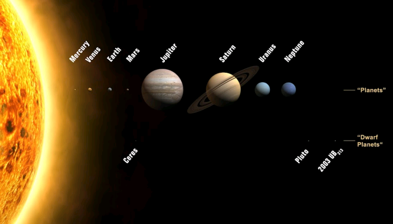
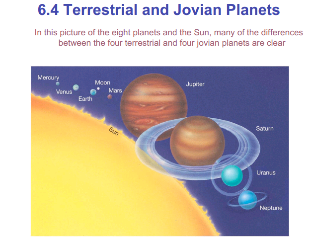

DEVELOPED BY ROBERT ZULU THE PROFESSIONAL PROGRAMMER

THE SOLAR SYSTEM
The Solar System
• Earth is one of nine planets, their satellite moons, and thousands of asteroids in our solar system.
• The terrestrial planets are solid and composed of compositional layers whereas the larger Jovian planets are dominated by gases.
• The physical characteristics of Earth and its position relative to the Sun have resulted in a unique set of conditions that led to the development of a flourishing biosphere.
• Energy for internal earth processes is derived from heat from the planet's interior.
The Sun is the centerpoint of a system of nine planets . In order, with increasing distance from the Sun the planets are
: Mercury, Venus, Earth, Mars, Jupiter, Saturn, Uranus, Neptune, and Pluto.
The planets are divided into two groups.
Terrestrial and Jovian Planets
The group of smaller planets (Mercury, Venus, Earth, Mars) nearest the Sun share similar origins to Earth and are termed the terrestrial planets. The much larger outlying planets , sometimes termed the gas giants, include Jupiter, Saturn, Neptune, and Uranus. These planets also share similar properties and are labeled the Jovian planets (Jupiter-like). The average distance from the Sun to Earth represents one astronomical unit (AU; 1AU = 150 million kilometers = 94 million miles). The planets range from 0.4 AU for Mercury to 39 AU for Pluto. The four innermost planets all lie within 1.5 AU of the Sun; essentially one planet per 0.4 AU. Mars, the farthest terrestrial planet, is separated from Jupiter, the nearest Jovian planet, by 3.7 AU. This gap houses the asteroid belt, thousands of rocky and/or metallic bodies that are classified as minor planets. The largest asteroids are almost the size of Pluto, the smallest are little more than space pebbles
SOLAR SYSTEM TEMPERATURE
Not only are these planets much larger than terrestrial planets, but they are also much further apart. The time it takes for a planet to complete a solar orbit increases with distance from the Sun. Mercury orbits the Sun in a little less than three months while it takes Pluto nearly two and a half centuries to finish one circuit. Technically, Pluto doesn't fit with either the terrestrial or Jovian planets. Its modest size prompted recent calls for the demotion of the smallest planet to minor planet status (equivalent to asteroids). Pluto, smaller than Earth's moon, is composed of ice and rock, like the asteroids, and has an odd orbit that actually takes it closer to the Sun than Neptune for part of its course. However, the dispute came to nothing when the International Astronomical Union (IAU), the body that coordinates the naming of celestial objects, closed discussion of the matter.
THE 2 BIG PLANES
Differences among the terrestrial planets:
• All have atmospheres, but they are very different; surface conditions vary as well. Only Venus and Earth have thick atmospheres.
• Temperatures decrease with increasing distance from Sun, as expected, but Venus and Earth have very different temperatures!
• Only Earth has liquid water on its surface. Water is a unique liquid and is believed necessary for life (good reasons for thinking this)
• Only Earth has oxygen in its atmosphere: a “biosignature” produced by early cyanobacteria, and a possible way to detect extraterrestrial life.
• Earth and Mars spin at about the same rate; Mercury is much slower, Venus is slow and retrograde (backwards).
• Only Earth and Mars have moons; only Earth has a huge moon that is a significant fraction of it’s planet’s size.
• Only Earth and Mercury have magnetic fields. This is a sign of a rotating core of conducting material (mostly iron).
Summary
• Solar system consists of Sun and everything orbiting it
• Asteroids are rocky, and most orbit between orbits of Mars and Jupiter
• Comets are icy and are believed to have formed early in the solar system’s life
• Major planets orbit Sun in same sense, and all but Venus rotate in that sense as well
• Planetary orbits lie almost in the same plane
• Four inner planets—terrestrial planets—are rocky, small, and dense
• Four outer planets—jovian planets—are gaseous and large
• Nebular theory of solar system formation: cloud of gas and dust gradually collapsed under its own gravity, spinning faster as it shrank
• Condensation theory says dust grains acted as condensation nuclei, beginning formation of larger objects